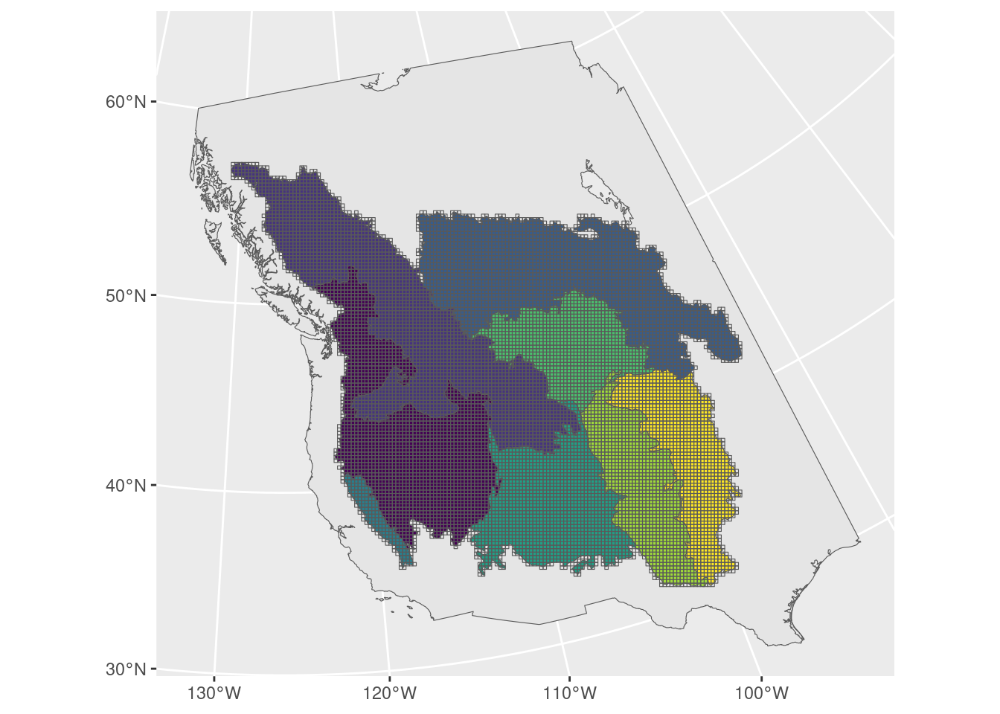
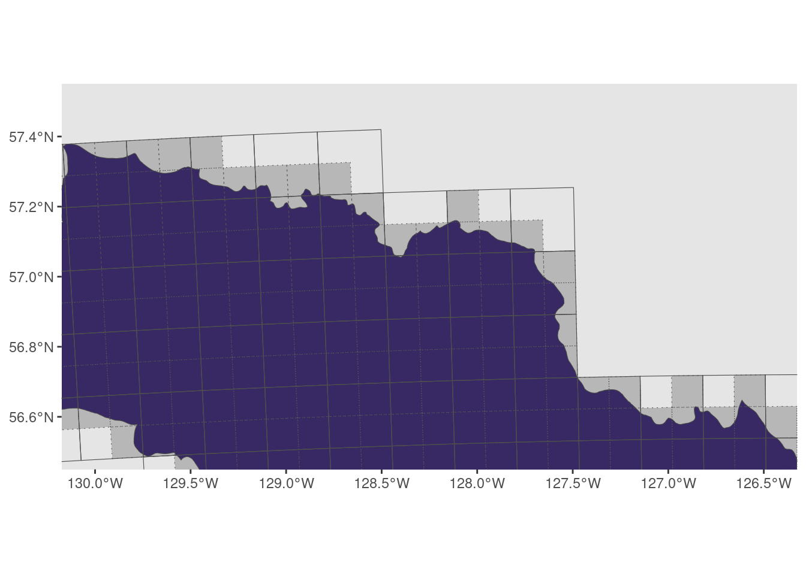

library(tidyverse)
library(sf)
library(units)
library(patchwork)
source("00_functions.R")
base_map <- read_rds("Data/Datasets/base_map.rds")
bcr <- read_rds("Data/Datasets/bcr_map.rds")
bc <- read_rds("Data/Datasets/bc_map.rds")2 - Create Grids
Create hex grid
We want
- Small enough grid size to detect relevant patterns
- Large enough to smooth over eBird spatial/temporal sampling issues
- Grid size similar to breeding territory size ~ 12ha –> Too small
- Try 10x10km or 20x20km
We also want
- The grid areas to be roughly equivalent (i.e. we need the spatial grid to be create with an equal-area projection)
- So we use the BC Albers projection (CRS 3005) already implemented in
02_grid
To see an image more closely, right-click and select “Open Image in new Tab” (or similar)
Setup
Create grids
- We want grids with dimensions of 10x10 or 20x20 km.
- 10x10 = 100 km2; 20x20 = 400 km2
- This gives 10,000 or 40,000 hectares
as_units(c(10, 20)^2, "km2") |>
set_units("ha")Units: [ha]
[1] 10000 40000Using functions from 00_functions.R…
First we’ll create the larger grid (20x20km)
grid_20 <- bcr |> # Starting area to make grid over
make_grid(size = 20 * 1000) |> # 20km in meters
mutate(grid_id = 1:n(),
area_ha = 40000) # reminder (20x20km = 400km2 = 40,000 ha)And now we’ll split this grid into to the smaller 10x10 km grid
grid_10 <- grid_filter(grid_20, bcr, size = 10 * 1000) |> # 10km in meters
bind_rows() |>
mutate(grid_id = 1:n(),
area_ha = 10 * 10 * 100) # reminder (10x10km = 100km2 = 10,000 ha)Mark BCRs and BC
Mark which grid cells belong to BC and which belong to a specific BCR. Takes the BCR or province status with the largest overlap. We’ll also remove any grids that don’t overlap a BCR (leftover from creating them).
grid_10 <- grid_10 |>
st_join(bcr, largest = TRUE) |>
st_join(bc, largest = TRUE) |>
filter(!is.na(bcr)) |>
mutate(bc = replace_na(bc, FALSE))Warning: attribute variables are assumed to be spatially constant throughout
all geometries
Warning: attribute variables are assumed to be spatially constant throughout
all geometriesgrid_20 <- grid_20 |>
st_join(bcr, largest = TRUE) |>
st_join(bc, largest = TRUE) |>
filter(!is.na(bcr)) |>
mutate(bc = replace_na(bc, FALSE))Warning: attribute variables are assumed to be spatially constant throughout
all geometries
Warning: attribute variables are assumed to be spatially constant throughout
all geometriesCheck that all grids have been assigned to a single BCR/province (should see no grids with more than one entry)
st_drop_geometry(grid_20) |>
count(grid_id) |>
filter(n > 1)[1] grid_id n
<0 rows> (or 0-length row.names)st_drop_geometry(grid_10) |>
count(grid_id) |>
filter(n > 1)[1] grid_id n
<0 rows> (or 0-length row.names)Finally we’ll update the numbering
grid_10 <- mutate(grid_10, grid_id = 1:n())
grid_20 <- mutate(grid_20, grid_id = 1:n())Double check
20x20km grid
ggplot() +
geom_sf(data = base_map) +
geom_sf(data = bcr, aes(fill = bcr), show.legend = FALSE) +
geom_sf(data = grid_20, fill = NA) +
scale_fill_viridis_d()
10x10km grid showing a subsection
- dotted grey grid are 10x10
- solid grid are 20x20
ggplot() +
geom_sf(data = base_map) +
geom_sf(data = bcr, aes(fill = bcr), show.legend = FALSE) +
geom_sf(data = grid_10, fill = "black", alpha = 0.2, linetype = "dotted") +
geom_sf(data = grid_20, fill = NA, colour = "grey30") +
coord_sf(crs = 4326, xlim = c(-130, -126.5), ylim = c(56.5, 57.5)) + # Zoom
scale_fill_viridis_d()
Save grids
write_rds(grid_10, "Data/Datasets/grid_10km.rds")
write_rds(grid_20, "Data/Datasets/grid_20km.rds")Session Info
devtools::session_info()─ Session info ───────────────────────────────────────────────────────────────
setting value
version R version 4.3.1 (2023-06-16)
os Ubuntu 22.04.3 LTS
system x86_64, linux-gnu
ui X11
language en_CA:en
collate en_CA.UTF-8
ctype en_CA.UTF-8
tz America/Winnipeg
date 2023-10-03
pandoc 3.1.1 @ /usr/lib/rstudio/resources/app/bin/quarto/bin/tools/ (via rmarkdown)
─ Packages ───────────────────────────────────────────────────────────────────
package * version date (UTC) lib source
cachem 1.0.8 2023-05-01 [1] CRAN (R 4.3.0)
callr 3.7.3 2022-11-02 [1] CRAN (R 4.3.0)
class 7.3-22 2023-05-03 [4] CRAN (R 4.3.1)
classInt 0.4-9 2023-02-28 [1] CRAN (R 4.3.0)
cli 3.6.1 2023-03-23 [1] CRAN (R 4.3.0)
codetools 0.2-19 2023-02-01 [4] CRAN (R 4.2.2)
colorspace 2.1-0 2023-01-23 [1] CRAN (R 4.3.0)
crayon 1.5.2 2022-09-29 [1] CRAN (R 4.3.0)
DBI 1.1.3 2022-06-18 [1] CRAN (R 4.3.0)
devtools 2.4.5 2022-10-11 [1] CRAN (R 4.3.0)
digest 0.6.31 2022-12-11 [1] CRAN (R 4.3.0)
dplyr * 1.1.2 2023-04-20 [1] CRAN (R 4.3.0)
e1071 1.7-13 2023-02-01 [1] CRAN (R 4.3.0)
ellipsis 0.3.2 2021-04-29 [1] CRAN (R 4.3.0)
evaluate 0.20 2023-01-17 [1] CRAN (R 4.3.0)
fansi 1.0.4 2023-01-22 [1] CRAN (R 4.3.0)
farver 2.1.1 2022-07-06 [1] CRAN (R 4.3.0)
fastmap 1.1.1 2023-02-24 [1] CRAN (R 4.3.0)
forcats * 1.0.0 2023-01-29 [1] CRAN (R 4.3.0)
fs 1.6.2 2023-04-25 [1] CRAN (R 4.3.0)
generics 0.1.3 2022-07-05 [1] CRAN (R 4.3.0)
ggplot2 * 3.4.2 2023-04-03 [1] CRAN (R 4.3.0)
glue 1.6.2 2022-02-24 [1] CRAN (R 4.3.0)
gtable 0.3.3 2023-03-21 [1] CRAN (R 4.3.0)
hms 1.1.3 2023-03-21 [1] CRAN (R 4.3.0)
htmltools 0.5.5 2023-03-23 [1] CRAN (R 4.3.0)
htmlwidgets 1.6.2 2023-03-17 [1] CRAN (R 4.3.0)
httpuv 1.6.9 2023-02-14 [1] CRAN (R 4.3.0)
jsonlite 1.8.4 2022-12-06 [1] CRAN (R 4.3.0)
KernSmooth 2.23-21 2023-05-03 [1] CRAN (R 4.3.0)
knitr 1.42 2023-01-25 [1] CRAN (R 4.3.0)
later 1.3.0 2021-08-18 [1] CRAN (R 4.3.0)
lifecycle 1.0.3 2022-10-07 [1] CRAN (R 4.3.0)
lubridate * 1.9.2 2023-02-10 [1] CRAN (R 4.3.0)
magrittr 2.0.3 2022-03-30 [1] CRAN (R 4.3.0)
memoise 2.0.1 2021-11-26 [1] CRAN (R 4.3.0)
mime 0.12 2021-09-28 [1] CRAN (R 4.3.0)
miniUI 0.1.1.1 2018-05-18 [1] CRAN (R 4.3.0)
munsell 0.5.0 2018-06-12 [1] CRAN (R 4.3.0)
patchwork * 1.1.2 2022-08-19 [1] CRAN (R 4.3.0)
pillar 1.9.0 2023-03-22 [1] CRAN (R 4.3.0)
pkgbuild 1.4.0 2022-11-27 [1] CRAN (R 4.3.0)
pkgconfig 2.0.3 2019-09-22 [1] CRAN (R 4.3.0)
pkgload 1.3.2 2022-11-16 [1] CRAN (R 4.3.0)
prettyunits 1.1.1 2020-01-24 [1] CRAN (R 4.3.0)
processx 3.8.1 2023-04-18 [1] CRAN (R 4.3.0)
profvis 0.3.7 2020-11-02 [1] CRAN (R 4.3.0)
promises 1.2.0.1 2021-02-11 [1] CRAN (R 4.3.0)
proxy 0.4-27 2022-06-09 [1] CRAN (R 4.3.0)
ps 1.7.5 2023-04-18 [1] CRAN (R 4.3.0)
purrr * 1.0.1 2023-01-10 [1] CRAN (R 4.3.0)
R6 2.5.1 2021-08-19 [1] CRAN (R 4.3.0)
Rcpp 1.0.10 2023-01-22 [1] CRAN (R 4.3.0)
readr * 2.1.4 2023-02-10 [1] CRAN (R 4.3.0)
remotes 2.4.2 2021-11-30 [1] CRAN (R 4.3.0)
rlang 1.1.1 2023-04-28 [1] CRAN (R 4.3.0)
rmarkdown 2.21 2023-03-26 [1] CRAN (R 4.3.0)
rstudioapi 0.14 2022-08-22 [1] CRAN (R 4.3.0)
scales 1.2.1 2022-08-20 [1] CRAN (R 4.3.0)
sessioninfo 1.2.2 2021-12-06 [1] CRAN (R 4.3.0)
sf * 1.0-12 2023-03-19 [1] CRAN (R 4.3.0)
shiny 1.7.4 2022-12-15 [1] CRAN (R 4.3.0)
stringi 1.7.12 2023-01-11 [1] CRAN (R 4.3.0)
stringr * 1.5.0 2022-12-02 [1] CRAN (R 4.3.0)
tibble * 3.2.1 2023-03-20 [1] CRAN (R 4.3.0)
tidyr * 1.3.0 2023-01-24 [1] CRAN (R 4.3.0)
tidyselect 1.2.0 2022-10-10 [1] CRAN (R 4.3.0)
tidyverse * 2.0.0 2023-02-22 [1] CRAN (R 4.3.0)
timechange 0.2.0 2023-01-11 [1] CRAN (R 4.3.0)
tzdb 0.3.0 2022-03-28 [1] CRAN (R 4.3.0)
units * 0.8-2 2023-04-27 [1] CRAN (R 4.3.0)
urlchecker 1.0.1 2021-11-30 [1] CRAN (R 4.3.0)
usethis 2.2.0 2023-06-06 [1] CRAN (R 4.3.0)
utf8 1.2.3 2023-01-31 [1] CRAN (R 4.3.0)
vctrs 0.6.2 2023-04-19 [1] CRAN (R 4.3.0)
viridisLite 0.4.1 2022-08-22 [1] CRAN (R 4.3.0)
withr 2.5.0 2022-03-03 [1] CRAN (R 4.3.0)
wk 0.7.2 2023-03-17 [1] CRAN (R 4.3.0)
xfun 0.39 2023-04-20 [1] CRAN (R 4.3.0)
xtable 1.8-4 2019-04-21 [1] CRAN (R 4.3.0)
yaml 2.3.7 2023-01-23 [1] CRAN (R 4.3.0)
[1] /home/steffi/R/x86_64-pc-linux-gnu-library/4.3
[2] /usr/local/lib/R/site-library
[3] /usr/lib/R/site-library
[4] /usr/lib/R/library
──────────────────────────────────────────────────────────────────────────────